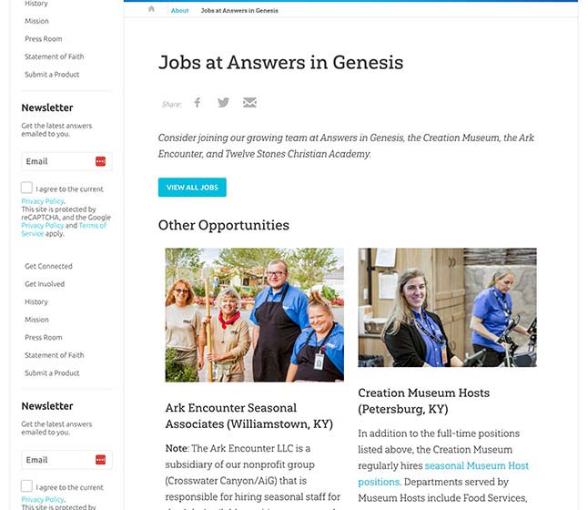
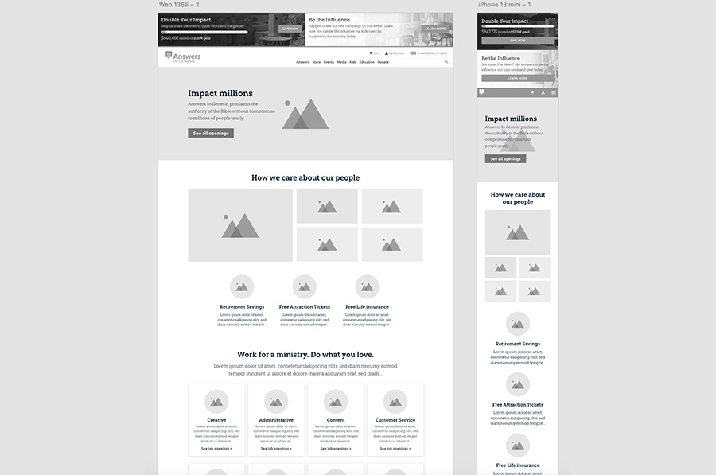

View Answers Research Journal
Work chevron_right Answers VBS Rotation

myAnswers VBS offers digital resources to automate management procesess for Church VBS Directors. Rotations are the order teams of kids will spend playing games, making crafts, eating snacks, or singing songs.
Larger churches need multiple rotations running at the same time, so that station leaders manage less children.
My Role:
Linda Sauer, age 50, is a stay at home mom for 6 kids. She manages VBS in the summer of 2024 for her church of approximately 5,000 members, and there are 600 kids registered.
One rotation of crafts, games, music, and snacks divides her teams into 150 kids, but that's too many for teachers to manage. Linda needs to create more rotations so that there are less kids per team.
The prior jobs page was a list of jobs. Users are less likely to click than to scroll, until they deem the source as credible.
The new jobs page provided insight about working for Answers in Genesis. It gives users a reason to apply.
Micro animations were added to the page to increase user engagement.